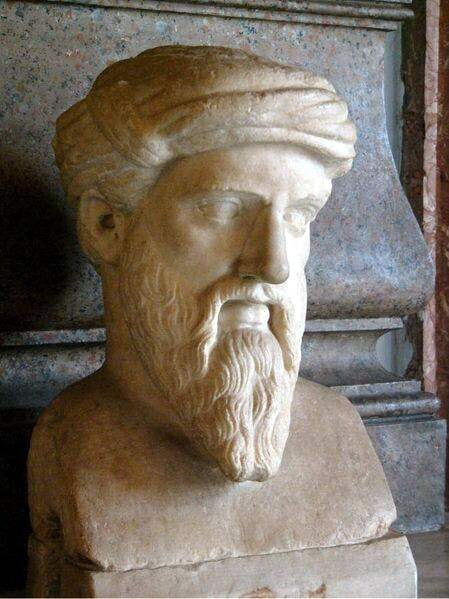

Pythagoras (c. 570-495 BC)

Pythagoras (c. 570 - 495 BCE) was an ancient Greek philosopher and mathematician born on the island of Samos. He is best known for his contributions to mathematics and for founding a philosophical movement known as Pythagoreanism. Around 530 BCE, he travelled to Croton, a Greek city in southern Italy, where he established a school. His followers studied mathematics, philosophy, religion, and the relationship between numbers and the natural world. They also followed strict rules and lived a communal lifestyle, sharing many aspects of their daily lives.
Pythagoras and his followers believed that numbers were the key to understanding the universe. They saw mathematical relationships in nature and believed that numbers could explain the order and harmony of the world. Pythagoras is most famously associated with the Pythagorean theorem, a mathematical principle used to calculate the sides of a right-angled triangle. However, historians debate whether he personally discovered this theorem, since some ideas attributed to him may have come from earlier mathematicians or members of his school.
Pythagoras was also interested in music and its connection to mathematics. His followers observed that musical notes could be produced by strings with particular length ratios, showing that mathematical relationships influenced the sounds people heard. These ideas contributed to the belief that the universe itself followed mathematical patterns. Pythagorean traditions even suggested that the movements of celestial bodies created a kind of cosmic harmony, sometimes described as the "music of the spheres."
Religion and the soul were equally important to Pythagoras' teachings. He believed that the soul was immortal and could pass into another body after death, a concept known as reincarnation or the transmigration of souls. His followers were encouraged to live disciplined lives and avoid certain foods and behaviours as part of their spiritual beliefs. Pythagoreanism therefore combined philosophical ideas, mathematical study, and religious practices rather than focusing on one subject alone.
Pythagoras' school also became involved in the political life of southern Italy. Tensions developed between his followers and people who opposed their influence, and some Pythagorean meeting places were attacked. The exact circumstances of Pythagoras' death remain uncertain, with ancient accounts offering different explanations.
Although many discoveries traditionally credited to Pythagoras cannot be confidently attributed to him personally, his ideas had a lasting influence on Western philosophy. His teachings helped shape the work of Plato and later thinkers, while the connection he and his followers drew between mathematics, music, and the natural world continued to inspire philosophers and scientists for centuries.